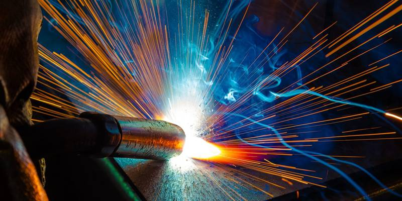

Pioneering Structural Steel Welding
WeldPro’s specialization in structural steel welding places it at the forefront of the construction industry. The company’s ability to handle complex steel frameworks has made it a critical player in urban development. Every beam welded by WeldPro is a testament to its commitment to safety and excellence, laying the foundation for structures that not only rise majestically into the skyline but are also built to last through generations. The expertise offered by WeldPro extends beyond mere construction. With a deep understanding of architectural and engineering dynamics, WeldPro ensures that every project adheres to the highest standards of structural welding. This meticulous attention to detail guarantees that each construction is not only aesthetically pleasing but structurally sound, enhancing the safety and durability of urban infrastructures.
The world of web development is vast and constantly evolving. From the latest in HTML5, CSS3, and JavaScript, to powerful frameworks and libraries like React and Angular, there is always something new to learn. As you delve into these technologies, you'll discover the endless possibilities for creating dynamic and interactive web experiences.
A Trusted Partner in Commercial Structural Welding
WeldPro is not just a welding company; it is a partner to businesses and governments seeking to create secure and lasting constructions. Their expertise in commercial structural welding has equipped them to tackle any project, no matter the scale or complexity. With WeldPro, clients are assured of a collaborative approach to construction, where every weld counts towards the greater goal of structural perfection. In conclusion, WeldPro’s commitment to quality and safety in welding services makes it a pillar of the construction industry. As they continue to innovate and adapt to the latest technologies and methods, their role in shaping sturdy and safe urban environments remains unchallenged. For anyone involved in construction, partnering with WeldPro means investing in a legacy of unmatched strength and reliability in structural steel welding.
Ensuring Longevity and Safety in Urban Landscapes
WeldPro’s impact on urban landscapes is significant. Each project under its belt, from skyscrapers that pierce the clouds to bridges that arch gracefully over waterways, is a showcase of WeldPro’s dedication to crafting enduring urban environments. Their commitment to using only the highest quality materials and the latest welding technology means that every structure is capable of withstanding the rigors of time and nature. In today’s fast-paced construction scene, WeldPro’s welding services are more vital than ever. As cities grow and demand for more innovative and reliable structures increases, WeldPro’s role in building resilient urban landscapes becomes increasingly indispensable. Their proven track record in enhancing the structural integrity of buildings makes them a preferred choice for developers and architects alike.